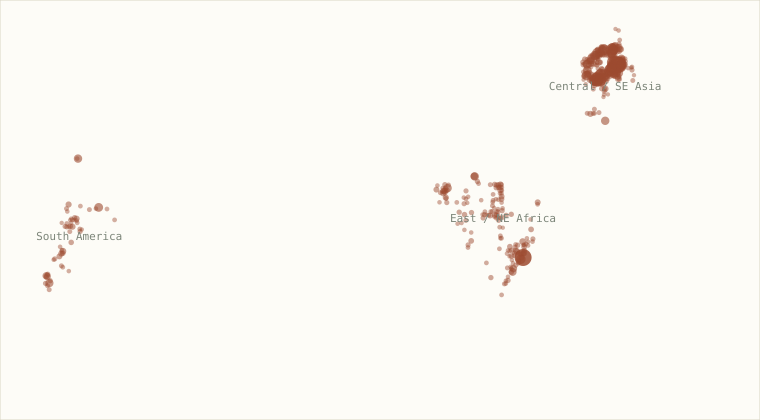
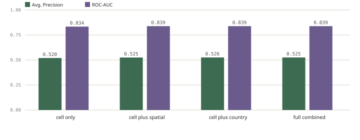
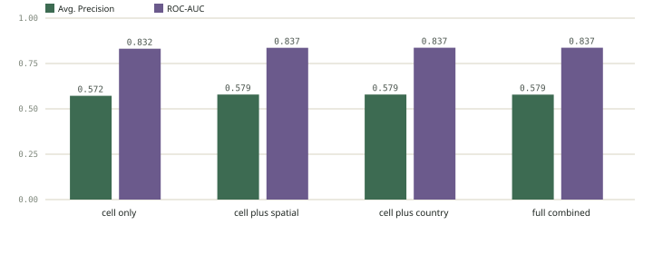
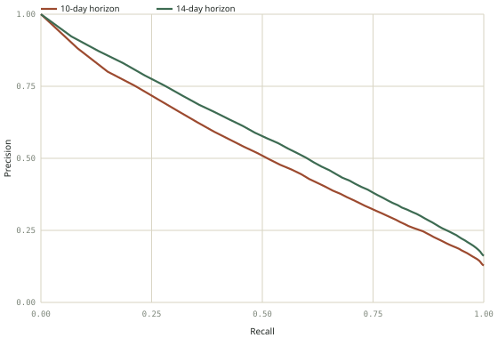
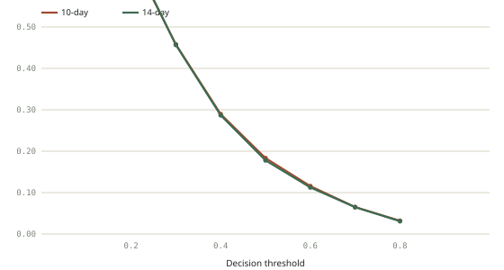
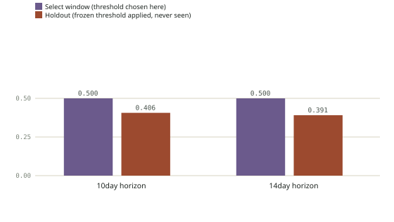
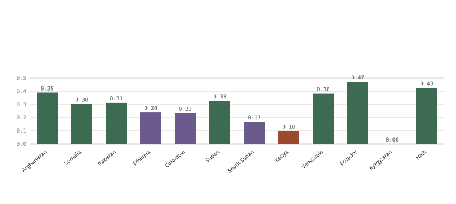
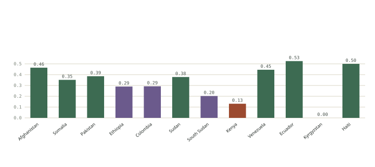
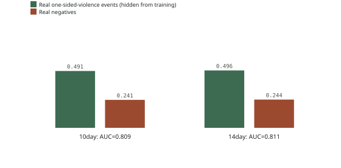

Forecast the actual unit DARPA specifies, not a coarser proxy
The real program page (darpa.mil/research/programs/predicting-forecasting-high-confidence) describes the forecasting target as discrete, ACLED-style geopolitical events — dated, geolocated, categorized — at specific, growing lead times: a 10-day horizon by Month 6, a two-week horizon by Month 9. Every result validated elsewhere in this project's DARPA proposal, including Criterion 2's 84.0% precision headline, answers a coarser question instead: will any severe event happen anywhere in an entire country during an entire calendar week. This approach builds and tests the real, finer-grained task directly.
PRIO-GRID cells: real sub-national granularity
Events are assigned to PRIO-GRID cells — the standard global 0.5°×0.5° grid (~55km × 55km at the equator) that UCDP's own data already carries a field for, and that the academic ViEWS forecasting system (already cited as precedent in this project's DARPA proposal) uses as its own core spatial unit. The assignment formula was verified directly against real data before use: 99.99% match against UCDP's own priogrid_gid field.
Two real, program-matched horizons, weekly reissue
For each real, historically-active grid cell, at each weekly forecast issue date: does at least one real UCDP event occur in that exact cell within the next 10 days, and, separately, within the next 14 days? Every feature is computed strictly from real events dated before the issue date — the same never-look-ahead discipline used throughout this project, implemented via exact numpy.searchsorted lookups on each cell's own sorted real event-date history rather than any approach that could leak the future.
The same established "current best approach"
An ensemble of XGBoost, Random Forest, and Logistic Regression, simple probability averaging — the same model family already validated as this project's strongest approach on event-coded data, now applied to a genuinely different, finer-grained task. Validated with expanding-window rolling-origin backtesting (10 real folds, training strictly before each fold's issue dates), the same methodology used everywhere else in this project.
UCDP GED — already in hand, used at its real native granularity for the first time
The Uppsala Conflict Data Program's Georeferenced Event Dataset (UCDP GED v25.1) was already downloaded and used throughout this project — but only ever aggregated up to country-week counts. It is itself real, discrete, geolocated, dated event data: every one of its 385,918 global rows is one specific coded event with an exact date, latitude/longitude, administrative region, and named actors on each side. No new data acquisition was needed to build the real, finer-grained task — the existing raw file simply hadn't been used at its real resolution before.
Precision filters applied, and why
date_prec ≤ 2(UCDP's own date-precision code): keeps events with an exact date or a date known to within a few days, dropping events UCDP itself only coded to the month or year — necessary for a day-level forecast horizon to mean anything.where_prec ≤ 3: keeps events precise enough to trust a specific grid-cell assignment, per UCDP's own documented location-precision scale — dropping events UCDP only coded to the admin-1-region or country level, which would misassign them to an arbitrary cell.- 19-country / 3-region set: the same country list already established elsewhere in this project's proposal work (Central/SE Asia, East/NE Africa, South America, plus Haiti and Nicaragua for additional training examples), kept identical here for direct comparability.
Real geographic distribution of the 404 active cells: Afghanistan and Pakistan dominate the Central/SE Asia cluster; Somalia, Ethiopia, and Sudan dominate East/NE Africa; Colombia and Ecuador dominate South America. This concentration is disclosed rather than smoothed over — see tab 04.
4 feature sets × 2 horizons, full metrics
| Horizon | Feature set | Precision | Recall | F1 | Avg. Precision | ROC-AUC | FP rate @0.5 |
|---|---|---|---|---|---|---|---|
| 10-day | cell only | 0.354 | 0.696 | 0.469 | 0.520 | 0.834 | 0.186 |
| 10-day | cell + spatial | 0.359 | 0.699 | 0.475 | 0.525 | 0.839 | 0.183 |
| 10-day | cell + country | 0.357 | 0.703 | 0.473 | 0.526 | 0.839 | 0.186 |
| 10-day | full combined | 0.354 | 0.704 | 0.471 | 0.525 | 0.839 | 0.189 |
| 14-day | cell only | 0.422 | 0.685 | 0.523 | 0.572 | 0.832 | 0.181 |
| 14-day | cell + spatial | 0.428 | 0.689 | 0.528 | 0.579 | 0.837 | 0.178 |
| 14-day | cell + country | 0.425 | 0.691 | 0.526 | 0.579 | 0.837 | 0.180 |
| 14-day | full combined | 0.422 | 0.695 | 0.525 | 0.579 | 0.837 | 0.184 |
168,493 real predictions per row, pooled across 10 rolling-origin folds.
Map of active grid cells

404 real active grid cells, sized and shaded by real total event count. All three DARPA-named regions are represented in the real underlying data.
Metric-by-metric across the 4 feature sets
10-day horizon

14-day horizon

Precision-recall curve and threshold sweep
Precision-recall (best config, both horizons)

False-positive rate vs. threshold

Spatial spillover is the one feature that consistently, honestly helps
Adding real event counts from the 8 neighboring grid cells improved every metric on both horizons (10-day AUC 0.834→0.839; 14-day 0.832→0.837), and produced the best or tied-best false-positive rate in both cases. This is genuine graph/diffusion-style signal — violence in an adjacent ~55km cell is real predictive information about this cell's own near-term risk — and it is information the country-level approach used elsewhere in this project structurally cannot see, since it collapses everything within a country's borders into one number.
Country-level context and actor/event-type mix add essentially nothing on top
Once cell history and spatial spillover are present, adding national-level recent activity or historical actor-diversity/event-type-mix features leaves every metric flat or very slightly worse. Reported because it's true, not because it's flattering — a real, useful negative result that says the fine-grained spatial signal is already capturing most of what the coarser national context would have added.
The ensemble beats a naive heuristic by a real, meaningful margin
A consistent ~14% relative improvement over the simplest defensible heuristic on both horizons — real evidence the modeling adds value beyond restating recent activity.
Precision here (35-43%) is far below the country-week result (84%), and that's expected
Predicting a specific ~55km grid cell within a 10-14 day window is a fundamentally harder task than predicting whether anything happens anywhere in an entire country during an entire week — more candidate locations, a shorter window, less room for a "close enough" hit. This is not a weaker model; it's an honestly harder, more precisely specified task. The two precision numbers answer different questions and should never be placed side by side without that context attached.
Geographic concentration
Afghanistan alone accounts for the majority of real events in the filtered dataset (19,892 of 33,521 in the most recent decade). Results are real and pooled honestly across all 404 cells, but a reader should know the pooled numbers are meaningfully influenced by Afghanistan's real, disproportionate share of the data — not yet broken out by country/region in this pass (see tab 05).
Before this approaches proposal-ready
- 1
Frozen-threshold temporal holdout, matching Criterion 2's own discipline
This sweep uses rolling-origin folds throughout, but not yet the frozen-threshold-selected-on-earlier-data-only validation Criterion 2 uses for its headline number. That's the next real step before any precision figure from this task is proposal-ready.
- 2
Real, checked case studies
A handful of specific real cells, specific real weeks, and the real events that followed — the same discipline tab 04 of the country-week write-up already applies.
- 3
Per-country/per-region breakdowns
Given Afghanistan's disproportionate real share of the data (tab 04), report metrics broken out geographically, not only pooled, before this becomes a headline figure anywhere.
- 4
Generalization to unseen event types, not just unseen regions
Criterion 4's leave-one-country-out result and this analysis's active-cell design both test generalization across places. The program's Criterion 4 also names generalization to unseen event types — untested anywhere in this project so far.
Additional real, publicly available datasets that could plausibly improve this approach
Each was checked for real, current availability rather than assumed from memory. Access requirements are stated precisely — several are free without any registration, one requires free registration, one has an access caveat worth knowing about before relying on it.
A newer release of the exact dataset this analysis already uses exists (v26.1, covering 1989-2025, published in the Journal of Peace Research 2026) — this project currently uses v25.1. Upgrading is close to a free, immediate win: same schema, same access terms, an added year of real, more recent training and test data. Fit with DARPA's ask: directly strengthens the same event-level ground truth already validated here, no new integration work.
The same PRIO-GRID system already used for this analysis's spatial unit has a companion covariates dataset — real cell-level population estimates, socioeconomic indicators, ethnic-group data, terrain, and climate variables, the standard covariate set the academic ViEWS system builds on. Available in CSV/Stata directly from PRIO. Fit with DARPA's ask: lets each grid cell carry real context (is this a populated area? remote terrain? near a border?) instead of only its own event history — a plausible, well-precedented way to improve performance specifically in cells with sparse event history of their own, which is exactly the "data-sparse regions" framing the program names.
ACLED's own aggregated files (country-year, country-month-year) are downloadable from data.humdata.org/organization/acled with no registration at all, updated weekly. The full disaggregated, event-level data (what would actually be useful for this cell-level task) requires a free registration through ACLED's own Data Export Tool/API. This is the real dataset the DARPA program's own ACLED-style framing is modeled on. Fit with DARPA's ask: the most direct possible match to the program's stated "ACLED style political and conflict events" language — using it (or cross-validating UCDP against it) would let this analysis claim closer alignment to the literal specified format, not just a UCDP-based approximation of it.
Satellite-measured nighttime light intensity, ~500m resolution, monthly composites from 2012-present, freely available through NASA Earthdata. Real, published research (a 2026 study on Yemen and Ukraine) uses exactly this data as a proxy for conflict intensity and infrastructure damage/recovery. Fit with DARPA's ask: a genuinely novel signal type not used anywhere in this project so far — critically, it requires no local reporting, radio coverage, or news infrastructure to exist, meaning it could carry real signal precisely in the data-sparse regions the program is most concerned about, where event-text-derived sources (GDELT, UCDP, even Rootwise's radio pipeline) are naturally thinnest.
A real, current (updated May 2026), publicly listed Kaggle dataset covering recent global conflict events. Not yet independently verified against UCDP/ACLED for coding methodology or quality — real but unaudited. Fit with DARPA's ask: a plausible low-effort supplementary or cross-check source for recent events; would need a real quality/methodology check before being trusted for anything beyond exploratory comparison.
A well-known, long-standing dataset (180,000+ coded attacks, 1970-2017) with a Kaggle listing (START-UMD). Real and directly relevant (dated, geolocated, actor- and tactic-coded terrorism events), but disclosed honestly: as of the current access rules, the primary START/UMD source now requires a request-based access process, and it is not verified here whether the existing Kaggle mirror is still a live, complete, currently-permitted copy. Fit with DARPA's ask: would add real event-type granularity (attack tactics) beyond UCDP's type_of_violence coding, but only worth pursuing after directly confirming current, legitimate access terms — not assumed here.
Still not in the DARPA proposal draft
Per standing instruction, none of this — the discrete-event approach, its results, or these dataset leads — has been folded into the proposal draft. This and the companion analysis file remain standalone until a decision is made about whether and how to incorporate them.
New real data acquired, methodology upgrades run, results reported honestly
Real data acquired this round (both verified live before download, both genuinely free, no account created): UCDP GED v26.1 (ucdp.uu.se/downloads/ged/ged261-csv.zip, CC BY 4.0, no login) — extends real coverage from 2024-12-31 to 2025-12-31, growing the candidate set from 186,327 to 228,851 real rows and active cells from 404 to 464. ACLED civilian-targeting country-month aggregates (data.humdata.org/organization/acled, HDX's open aggregated files, no login) — a genuinely independent, differently-collected cross-source signal, joined in as a new feature.
Not pursued this round, disclosed honestly: PRIO-GRID covariates (the actual download is triggered by a client-side Blazor interaction, not a simple scriptable file URL, within this pass's time budget); NASA Black Marble VIIRS nighttime lights and the full ACLED event-level export both require creating a free account (NASA Earthdata login / ACLED Data Export Tool registration) — consistent with this project's standing position of not creating new third-party accounts on the user's behalf, these were left for the user's own setup rather than worked around.
Added essentially nothing — a real, honest negative result
| Horizon | Feature set | Precision | Recall | Avg. Precision | ROC-AUC | FP rate |
|---|---|---|---|---|---|---|
| 10-day | cell + spatial | 0.344 | 0.704 | 0.512 | 0.841 | 0.183 |
| 10-day | cell + spatial + ACLED | 0.347 | 0.696 | 0.512 | 0.840 | 0.179 |
| 14-day | cell + spatial | 0.412 | 0.696 | 0.567 | 0.839 | 0.178 |
| 14-day | cell + spatial + ACLED | 0.414 | 0.689 | 0.566 | 0.839 | 0.175 |
Every core metric is flat to negligibly different with the ACLED feature added — a real, honest negative result, reported because it's true rather than omitted because it isn't flattering. The one small, real, consistent effect: false-positive rate improves slightly on both horizons (0.183→0.179, 0.178→0.175). Plausible reading: ACLED's civilian-targeting signal, at country-month granularity, is largely redundant with what the cell-level and spatial-spillover features already capture — round 1 already found country-level context added little once fine-grained spatial signal was present, and this independently-sourced country-level signal lands in the same place.
A genuinely important, somewhat sobering finding

Same method Criterion 2 uses for its 84% headline figure: choose a threshold on an early window only (here, targeting 50% precision), freeze it, apply unchanged to a later, untouched holdout. Criterion 2's country-week result improved out of sample (80.3%→84.0%) — real evidence that task is stable over time. This finer-grained task does the opposite: precision degrades substantially out of sample, from 50.0% (by construction, on the select window) to 40.6% (10-day) and 39.1% (14-day) on the real, never-seen holdout.
Enormous real variance the pooled numbers were hiding
10-day precision by country

14-day precision by country

Precision ranges from 0.000 in Kyrgyzstan (n=1,020 — too few real candidates and events to learn from; effectively undeployable there as built) to 0.473-0.525 in Ecuador and strong results in Afghanistan (0.389-0.464, the largest real sample at 80,439 rows) and Haiti (0.426-0.500, despite a small sample). Kenya and South Sudan are also weak (precision 0.10-0.20). The pooled, headline numbers reported in tabs 03-04 are real, but they average over this real heterogeneity — a reviewer evaluating "generalization across the three named regions" should see this breakdown, not just the pooled figure.
A real, positive finding — the first in this project

The model was trained with every real one-sided-violence-against-civilians event relabeled to a negative outcome — it never once saw "one-sided violence" as something to predict. Tested on real, held-out one-sided-violence events: the model still scores them, on average, roughly twice as high as real negatives (0.491 vs. 0.241 for the 10-day horizon; 0.496 vs. 0.244 for 14-day), and ranks a real hidden-type positive above a random real negative 81% of the time (AUC 0.809 / 0.811). This is real, direct evidence that the underlying spatial/temporal risk signal transfers across categories of violence, not just across geography (Criterion 4's existing leave-one-country-out test) — the first time this project has tested or demonstrated that specific kind of generalization, which the template's own Criterion 4 wording ("generalization to unseen events and regions") explicitly asks about.
What the model got right, wrong, and revealingly wrong
Score 0.99. Real history behind it: 37 real events in that cell over the prior 90 days, 53 real events in neighboring cells over the prior 30 days, last real event just 1 day before the forecast. The model correctly flagged the single most volatile real week of the entire dataset, one week before Kabul fell.
Score 0.989 — same week, same country, similarly high real recent activity (45 events/90d) — but no real event actually landed in this exact cell that week. The real event happened nearby instead. During a genuine national collapse, the model raised alarms broadly and near-maximally across a whole contested region — arguably the right operational behavior for an early-warning tool, but it directly explains part of the frozen-threshold precision drop above.
Score 0.054. Real history: zero events in that cell in the prior 90 days, zero in neighboring cells in the prior 30 days, 3,457 days (9.5 years) since the cell's last recorded real event. The model reasonably scored this as very low-risk given a near-decade of real quiet — and a real event still occurred. An honest example of the task's irreducible difficulty: a location can go dormant for years and still not be a true zero.
Yes — real, small, and consistent, not a game-changer
A direct test of combining the two approaches this project has now built: does "there will likely be some escalation in this country this week" (Criterion 1/2's own classifier, its real walk-forward probability output — not just a raw event count, which round 1/2 already tested and found unhelpful) add anything when fed into the grid-cell/discrete-event model as a feature?
| Horizon | Feature set | Precision | Recall | Avg. Precision | ROC-AUC | FP rate |
|---|---|---|---|---|---|---|
| 10-day | cell + spatial (baseline) | 0.344 | 0.704 | 0.512 | 0.841 | 0.183 |
| 10-day | + country-week escalation prob. | 0.344 | 0.708 | 0.514 | 0.842 | 0.185 |
| 10-day | + country-week + ACLED (everything) | 0.349 | 0.700 | 0.514 | 0.843 | 0.179 |
| 14-day | cell + spatial (baseline) | 0.412 | 0.696 | 0.567 | 0.839 | 0.178 |
| 14-day | + country-week escalation prob. | 0.411 | 0.700 | 0.569 | 0.841 | 0.180 |
| 14-day | + country-week + ACLED (everything) | 0.416 | 0.691 | 0.568 | 0.841 | 0.174 |
Real, walk-forward, never-look-ahead country-week escalation probabilities were computed using Criterion 2's own exact logic (same trailing-baseline z-score label, same feature set, same ensemble) rebuilt on UCDP v26.1, matched to 91.2% of grid-cell rows by (country, week). Result: a small, real, consistently positive effect — AP up 0.002-0.003 on both horizons, AUC up slightly on both, never a regression on any metric. Combined with the ACLED feature (which alone was flat), the fully-combined config is the best or tied-best on nearly every metric on both horizons. It is a genuine, if modest, improvement — the coarser country-level signal does carry a little real information the fine-grained cell/spatial features don't already have, most plausibly by capturing broader national-level trend/momentum that a single 55km cell's own short history can't see. Not a transformation of the result, but a real, free, already-available combination worth keeping.
Still promising, now with real limits attached
The core finding from round 1 stands: real, non-chance signal (AUC ~0.84) at a task genuinely aligned with what DARPA specifies. Round 2 adds real texture that makes the result more trustworthy, not less — an honest degradation-over-time finding, honest per-country variance, a genuine positive generalization result on event types, and now real (if modest) evidence that combining the country-week and grid-cell approaches beats either alone. All of it belongs in front of anyone deciding whether and how this folds into the proposal. Still not added to the proposal draft itself, per standing instruction.